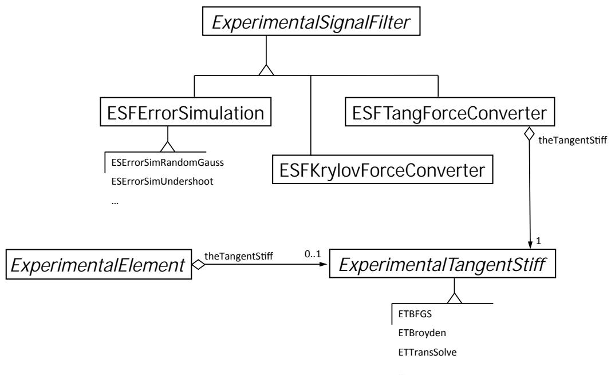

5.1. expSignalFilter 简介
这些命令用于构造 expSignalFilter 对象。这些对象用于滤波或修改从控制系统发送和接收的信号。后面再新增的Force控制加载中，新增了ESFTangForceConverter、ESFKrylovForceConverter用于将变形转换为力。

图 包含 ESFTangForceConverter、ESFKrylovForceConverter 和 ExperimentalTangentStiff 类的 OpenFresco UML 类图。
本章内容
ErrorSimRandomGauss 实验信号滤波器
ErrorSimUndershoot 实验信号滤波器
ErrorSimTimeDelay
下面两个是用于force控制使用
KrylovForceConverter
TangForceConverter